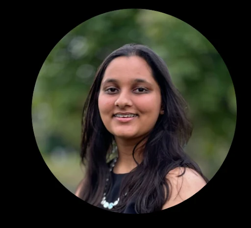
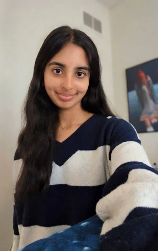
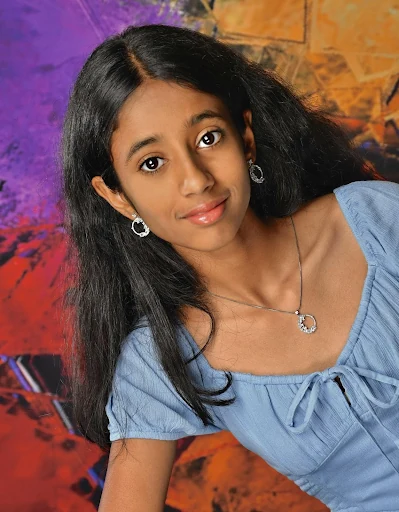
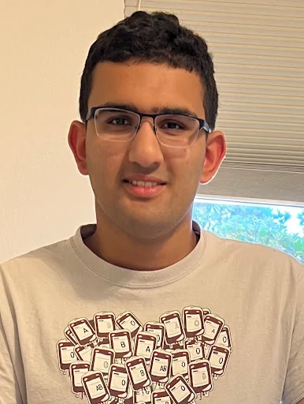
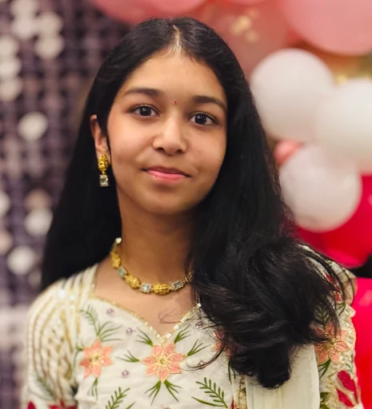
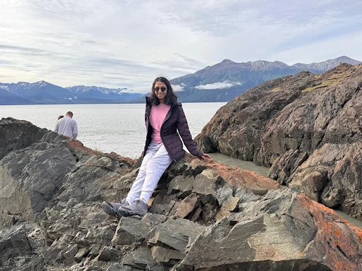
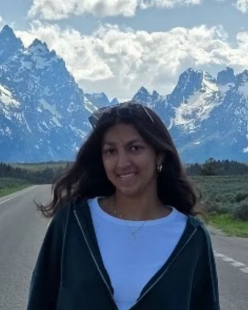
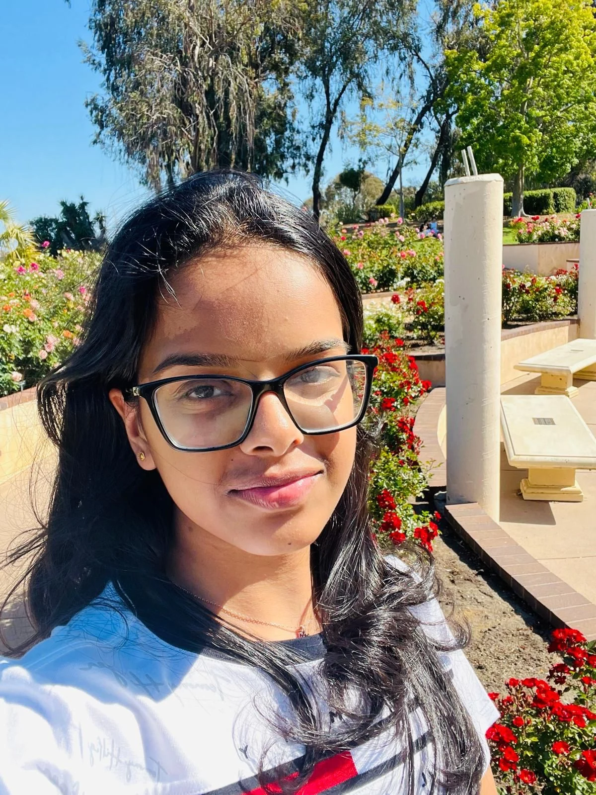
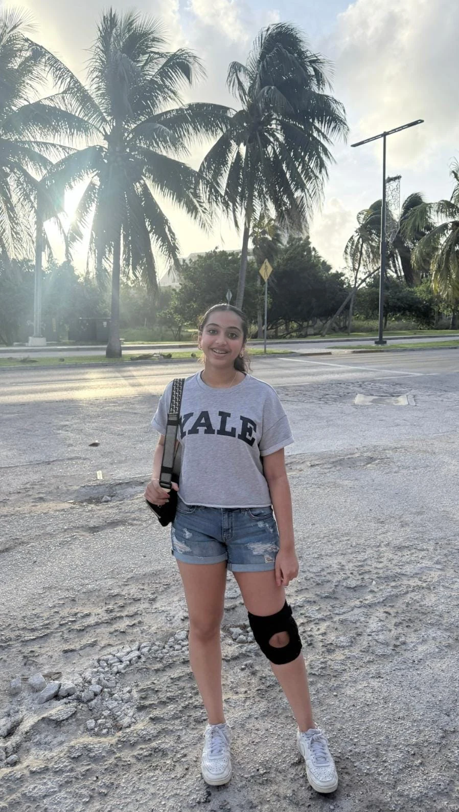
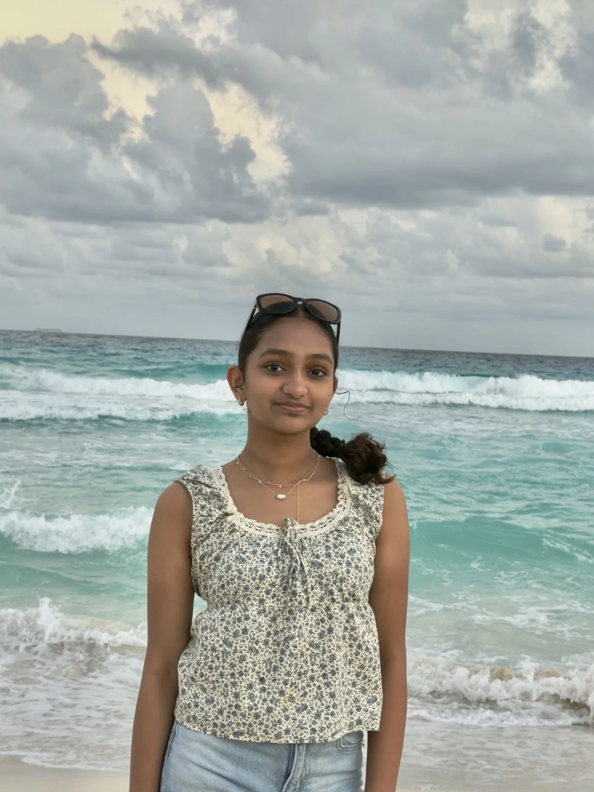

Maya Sharma
Co-Founder
Neuqua Valley High School
Maya is a senior at Neuqua Valley, a 2023 Congressional App Challenge winner, and a TEDxBolingbrookYouth speaker. She helps students explore coding and space science through AstroThink.
Our team develops curriculum, teaches programs, and coordinates STEM outreach.

Co-Founder
Neuqua Valley High School
Maya is a senior at Neuqua Valley, a 2023 Congressional App Challenge winner, and a TEDxBolingbrookYouth speaker. She helps students explore coding and space science through AstroThink.

Co-Founder
Neuqua Valley High School
Anwita is a senior at Neuqua Valley and a Rocket Club team captain who has participated in the American Rocketry Challenge. Her interests include aerospace and engineering design.

AI Curriculum
Illinois Mathematics and Science Academy
Deetya is a sophomore at IMSA interested in artificial intelligence and teaching younger students to create, experiment, and solve problems.

YouTube Channel Head
Westview High School
Aaryan is a junior at Westview interested in aerospace engineering. He shares AstroThink concepts through the team's YouTube channel.

Space Curriculum Development
Waubonsie Valley High School
Mirna is a sophomore at Waubonsie Valley with interests in mathematics and aerospace. She competes in math competitions and develops space science lessons.

AI Curriculum Development
Illinois Mathematics and Science Academy
Ishika is a junior at IMSA interested in physics, math, and their applications. She develops AI curriculum and participates in FIRST Tech Challenge robotics, badminton, and viola.

Space Curriculum Development
High school junior
Shivani is interested in aerospace, rocketry, and drones. She enjoys building, testing, and flying, along with classical dance and 3D printing.

Engineering & AI
Neuqua Valley High School
Sai is a junior at Neuqua Valley interested in aviation, engineering design, and machine learning, with experience in Robotics, Math Team, and Rocket Club.

AI & Space Education
Neuqua Valley High School
Sruthi is a freshman at Neuqua Valley interested in space exploration and artificial intelligence, from questions at the cellular scale to the astronomical scale.

STEM Outreach
Neuqua Valley High School
Dhathri is a freshman at Neuqua Valley who enjoys technology, problem-solving, and helping younger students explore new ideas.
Email us about student programs, school visits, or community partnerships.